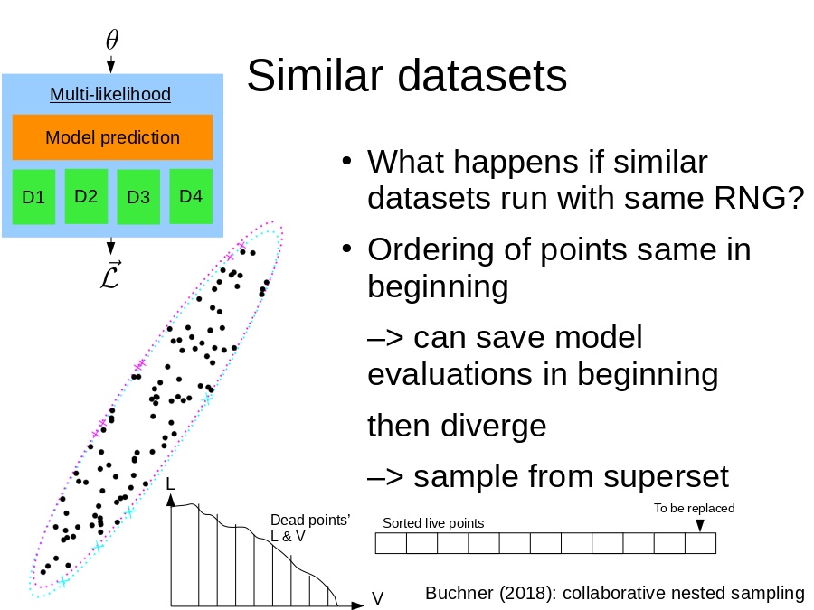

First page Back Continue Last page Overview Text
 can save model evaluations in beginning
then diverge
–> sample from superset
Buchner (2018): collaborative nested sampling
Model prediction
D1
D2
D3
D4
Multi-likelihood
Sorted live points
To be replaced
V
L
Dead points’ L & V">